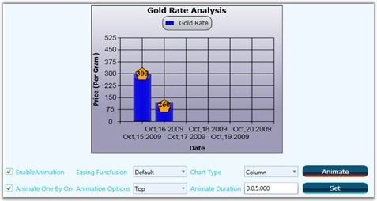

Essential Chart Silverlight now comes with animation support. Charts can be animated by using animation options available. The state-of-the-art animation lets you to create lively charts that can be used for marketing, attractive data presentation, and so on.
It allows you to:
· Set the animation option for a chart.
· Set the type of animation.
· Set the animation by each series.
· Set the duration for the animation.
· Set the effects for animation.
Properties
The following table lists the properties and their usage in chart animation.
|
Property |
Description |
Type |
Value Returned |
|
EnableAnimation |
Sets the Animation option for the Chart. |
Dependency Property |
Boolean |
|
AnimateOption |
Sets the Type of Animation. |
Dependency Property |
Enum(AnimationOptions) |
|
AnimateOneByOne |
Sets the Animation by each series. |
Dependency Property |
Boolean |
|
AnimationDuration |
Sets the duration for the Animation. |
Dependency Property |
Enum(TimeSpan) |
|
EasingFunction |
Sets effects for Animation. |
Dependency Property |
Enum(IEasingFunction) |
Events
The following table lists the events and their usage in chart animation.
|
Event |
Event Trigger |
Event Args |
Purpose |
|
OnEaseAnimationChanged |
Whenever the properties AnimationDuration, AnimateOneByOne, AnimateOption and EnableAnimation change. |
- |
To set the Animation option selected by the user. |
|
OnEnableAnimationChanged |
Whenever the properties AnimationDuration, AnimateOneByOne, AnimateOption and EnableAnimation change. |
- |
To select or unselect the Animation of chart. |
Methods
The following table lists the methods and their usage in chart animation.
|
Method |
Return Type |
Purpose |
|
StartAnimation |
Void |
This method is called when the user starts animation by using the options specified. |
Enabling and Customizing Chart Animation
The chart animation can be enabled by setting EnableAnimation property to true.
|
[XAML]
<syncfusion:ChartSeries Type="Column" EnableEffects="True" Label="Mark" EnableAnimation="{Binding ElementName=enableanimation, Path=IsChecked}" Interior="Blue" StrokeThickness="2" DataSource="{StaticResource data}" BindingPathX="Name" BindingPathsY="Mark, MinMark,MaxMark, Low, High" AnimateOneByOne="{Binding ElementName=animateind, Path=IsChecked}"> </syncfusion:ChartSeries> |
|
[C#]
chart.Areas[0].Series[0].StartAnimation(); chart.Areas[0].Series[0].AnimationDuration = ts; chart.Areas[0].Series[0].AnimateOption = AnimationOptions.Rotate; chart.Areas[0].Series[0].EasingFunction = new ElasticEase(); |
Run the code. The following output is displayed.

Figure 122: Chart Animation Enabled